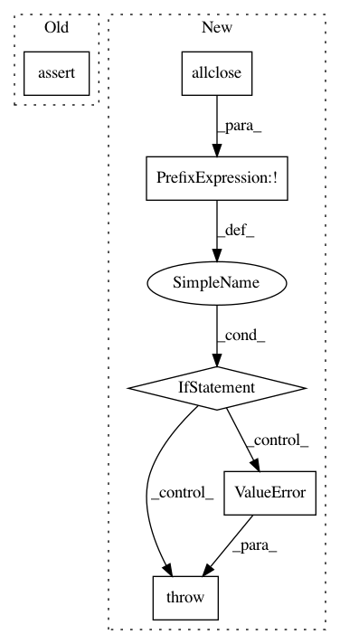

0c5c35a3c43c7ea4eb218805d9478f98e9af39ea,dipy/tracking/markov.py,MarkovIntegrator,__init__,#MarkovIntegrator#Any#Any#Any#Any#Any#Any#Any#Any#Any#,110
Before Change
self._cos_similarity = np.cos(np.deg2rad(angle_limit))
if mask_voxel_size is None:
assert mask.shape == interpolator.data.shape[:-1]
mask_voxel_size = interpolator.voxel_size
else:
mask_voxel_size = np.asarray(mask_voxel_size)
mask_FOV = mask_voxel_size * mask.shape
After Change
mask_voxel_size = np.asarray(mask_voxel_size)
mask_FOV = mask_voxel_size * mask.shape
data_FOV = interpolator.voxel_size * interpolator.data.shape
if not np.allclose(mask_FOV, data_FOV):
raise ValueError("The FOV of the data and the FOV of the mask "
"do not match")
self._mask = NearestNeighborInterpolator(mask.copy(), mask_voxel_size)
def __iter__(self):
return self._generate_streamlines()
In pattern: SUPERPATTERN
Frequency: 3
Non-data size: 6
Instances
Project Name: nipy/dipy
Commit Name: 0c5c35a3c43c7ea4eb218805d9478f98e9af39ea
Time: 2013-01-29
Author: mrbago@gmail.com
File Name: dipy/tracking/markov.py
Class Name: MarkovIntegrator
Method Name: __init__
Project Name: arraiy/torchgeometry
Commit Name: 4a45e9ae54615c9da540039ae59da6b4fce941a1
Time: 2020-11-25
Author: edgar.riba@gmail.com
File Name: kornia/geometry/transform/crop/crop2d.py
Class Name:
Method Name: validate_bboxes
Project Name: geomstats/geomstats
Commit Name: 7e107e16e1dfff3f408cd29918b8bb050632f50a
Time: 2020-04-21
Author: ninamio78@gmail.com
File Name: examples/geomstats_in_pymanopt.py
Class Name:
Method Name: estimate_dominant_eigenvector